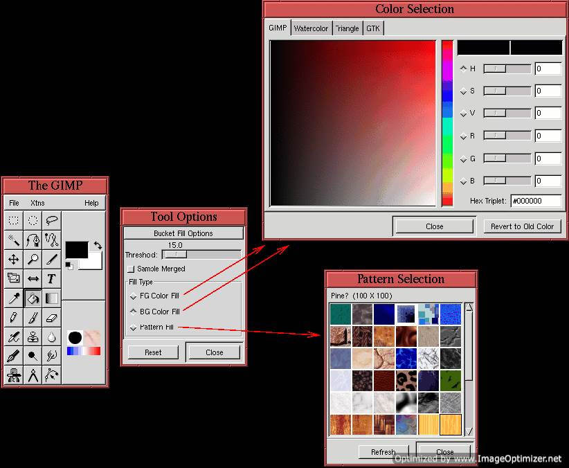
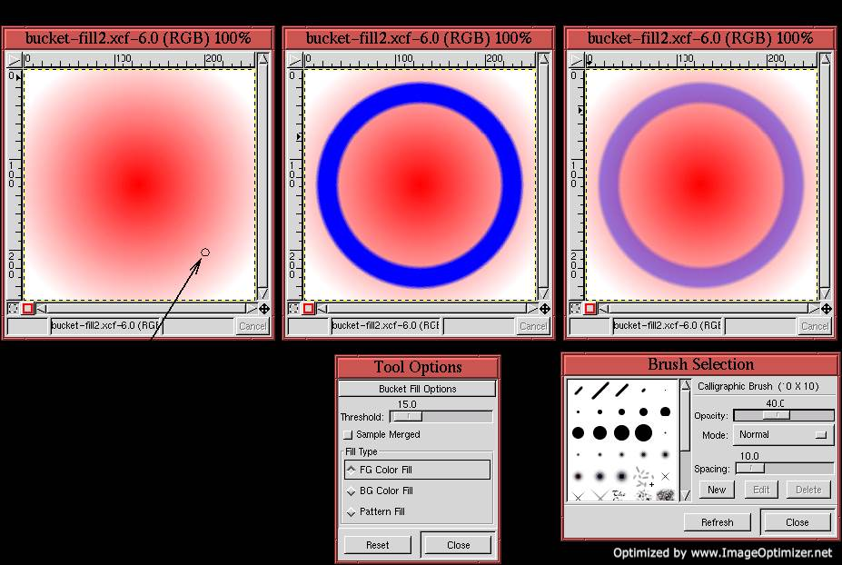
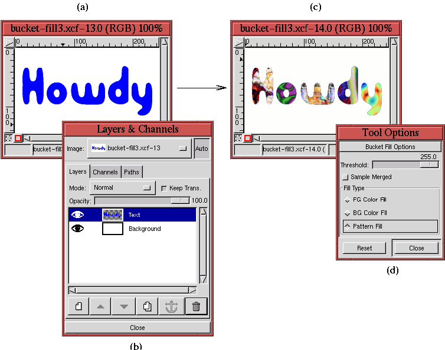

Next: 8.2 Gradient Rendering Techniques
Up: 8. Rendering Techniques
Previous: 8. Rendering Techniques
8.1 The Bucket Fill Tool
Bucket Fill is a very useful tool for
rendering. It is found in the Toolbox window and is represented by
the bucket icon shown in Figure 8.1(a).
Figure 8.1:
Using the Bucket Fill Tool
|  |
The Bucket Fill tool is used for filling regions, in whole
layers or selections, with a specified color or image pattern. The
Tool Options dialog, shown in
Figure 8.1(b), indicates that the choice
between color and image pattern is specified by clicking the
appropriate radio button. For color fills, either the Active
Foreground Color or Active Background Color can be used. The
choice of color is specified with the Color Selection dialog
shown in Figure 8.1(c). For pattern fills,
the image pattern is chosen from the Pattern
Selection dialog, shown in
Figure 8.1(d). The Pattern Selection
dialog is found in Image:Dialogs/Patterns, and can also be
invoked by typing C-S-p in the image or Toolbox windows, or by
clicking on the Active Pattern icon in the Toolbox window.
The Bucket Fill tool fills the image with a color or a pattern
in a manner similar to the way the Magic Wand makes selections
(see Section 3.1.1). Clicking in an image specifies a
seed pixel. The color value of the seed is then compared against the
color of the seed's neighboring pixels; if the difference between
their color values and the seed's is less than a threshold they are
filled. This process repeats for the neighbors' neighboring pixels,
and so on, until all the contiguous pixels whose color values differ
from the seed's by less than the threshold are filled. The Bucket Fill's threshold value is set using the Threshold slider found
in the Bucker Fill's Tool Options dialog (see
Figure 8.1(b)).
There are several controls found in the Brush Selection dialog
that affect the way Bucket Fill applies paint or patterns to an
image canvas. In particular, there is the Opacity slider, which
controls the alpha channel of the applied color or pattern (see
Chapter 4 for more on alpha channels), and there is the
Mode menu which selects the blending mode to be used (blending modes
are described in Section 5.6).
Figure 8.2
Figure 8.2:
Using the Threshold and Opacity Options
|  |
illustrates the effects of the Threshold and Opacity settings.
Figure 8.2(a) shows the location of a seed
pixel selected in an image containing a radial gradient. The color of
the gradient varies gradually from the center of the image to its
edge. This allows you to see how the Bucket Fill tool affects a
region of the image depending on the placement of the seed and the
value of the Threshold. Figure 8.2(b)
shows how much of the original gradient is filled with blue when the
Threshold is set to 15. Setting the Threshold to 255 would have
resulted in completely filling the image with blue.
Figure 8.2(c) shows the result when the
Opacity slider in the Brush Selection dialog is set to 40%.
Here, the applied blue fill mixes with the red gradient behind it in a
ratio of 40% to 60%.
Figure 8.3
Figure 8.3:
Filling with Image Patterns
|  |
illustrates filling a part of an image with patterns.
Figures 8.3(a) and (b) show that the image
consists of two layers, a white background and some blue text on an
otherwise transparent layer (shown in the Balcony Angels font).
Figure 8.3(c) shows the result of filling
each letter in the text with a different pattern, and
Figure 8.3(d) shows that the Threshold for
these fills is set to 255. This is necessary to get a complete fill.
A lower value of Threshold would fail at some text edge pixels because
the text is antialiased there (see Section 3.1.2).
Next: 8.2 Gradient Rendering Techniques
Up: 8. Rendering Techniques
Previous: 8. Rendering Techniques
©2000 Gimp-Savvy.com